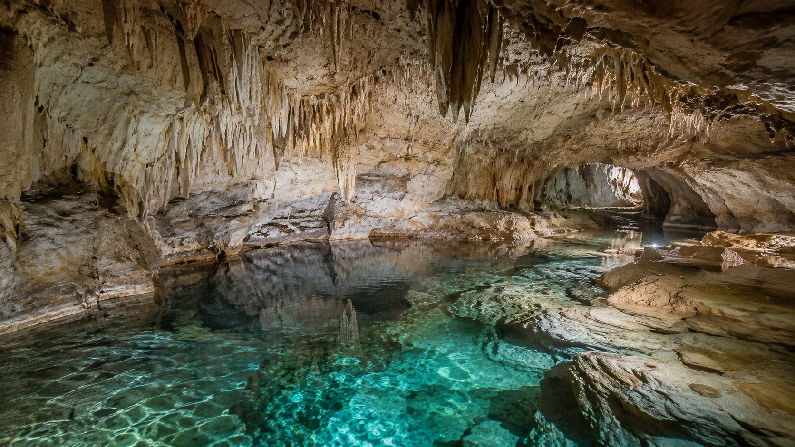
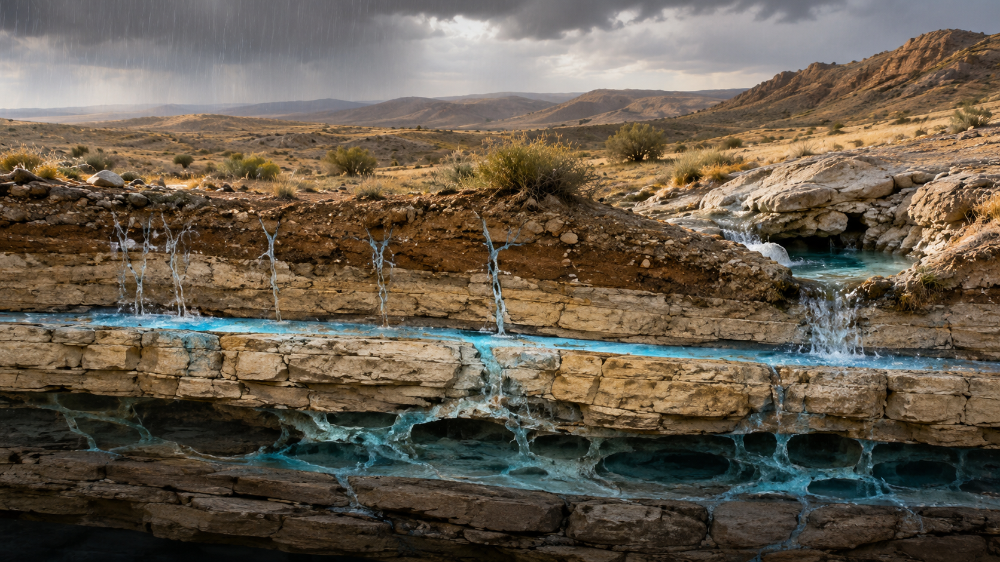
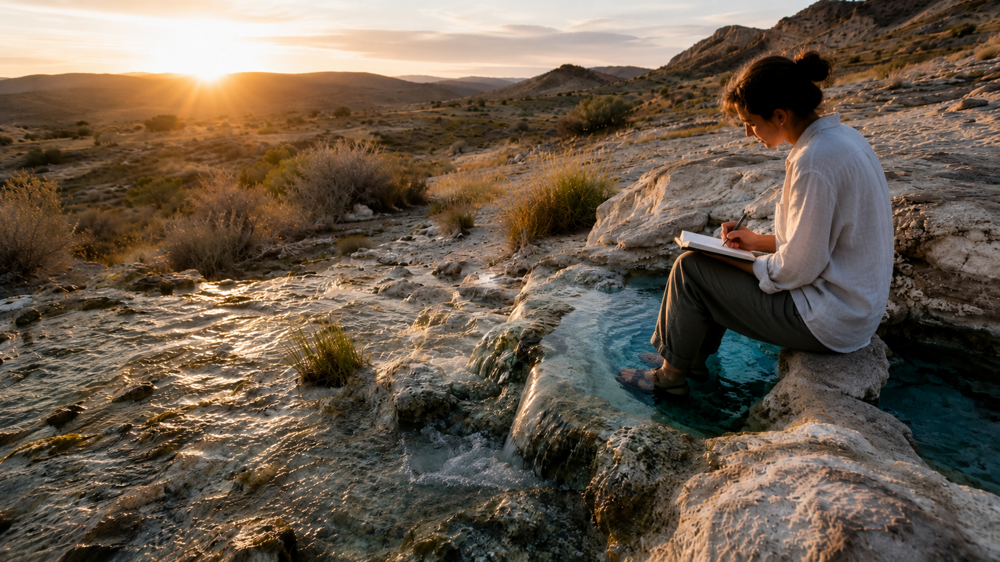
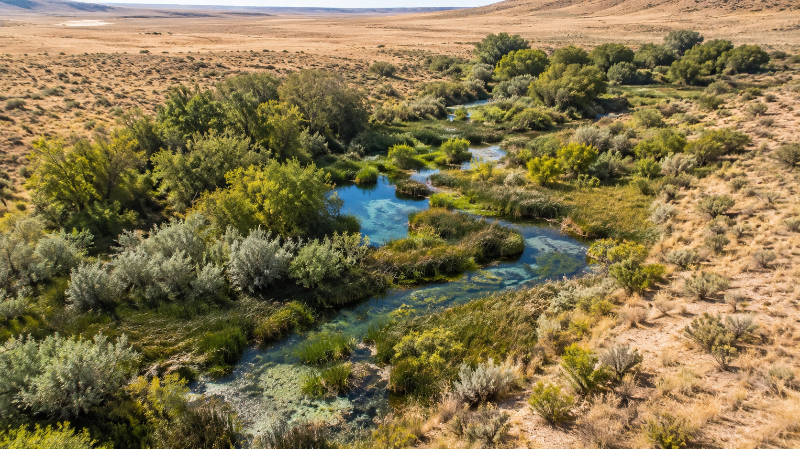
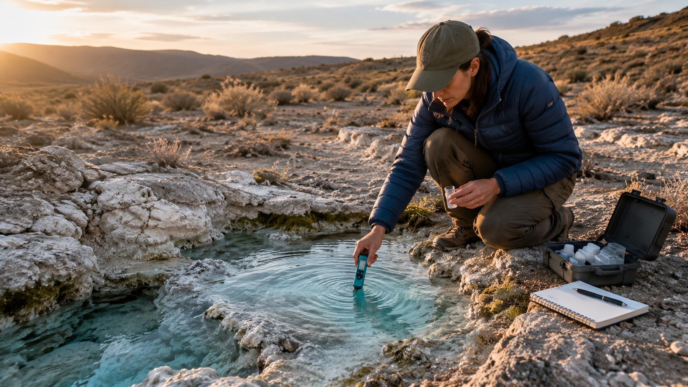

Alkaline Aquifers and the Wellsprings of the Mind
There are certain subjects that appear, at first glance, to belong to separate worlds. Water chemistry seems to belong to the field of geology, health, and environmental science. Imagination seems to belong to art, psychology, and philosophy. The hidden life of the mind appears inward, while aquifers lie beneath the earth. One is subtle, symbolic, and psychic; the other is mineral, measurable, and material.
Yet the deeper one looks, the more these two domains begin to mirror one another.
An aquifer is a hidden reservoir. It is not the surface stream that announces itself with sound and movement. It is the concealed body of water beneath the visible world, stored in stone, sand, gravel, and ancient geological memory. It is a subterranean treasury. It nourishes springs, feeds wells, sustains landscapes, and preserves the mineral signature of the earth through which it passes.
The mind has its aquifers also.
Beneath the surface current of daily thought there are deeper reservoirs of image, memory, intuition, dream, symbol, and formative power. The imagination is not merely fantasy. It is a living wellspring. It receives impressions, dissolves them, recombines them, mineralizes them with meaning, and returns them to consciousness as vision, insight, art, invention, and revelation.
To explore alkaline aquifers, then, is not only to study water beneath the ground. It is also to contemplate a profound metaphysical analogy: that the hidden waters of the earth and the hidden waters of the psyche both sustain life, both require careful access, and both become transformative when approached with discipline rather than superstition.

The Hidden Reservoir Beneath the Surface
Modern life is often dominated by surface-flow thinking. We react, scroll, consume, respond, and move from one stimulus to another. Our thoughts become like runoff after a storm: fast, scattered, and easily contaminated. But the most nourishing forms of understanding rarely come from this restless surface.
They come from depth.
An aquifer forms when water descends into the earth and is held within permeable layers of rock or sediment. This descent is crucial. Water that remains only on the surface evaporates, floods, or becomes polluted. Water that descends is filtered, pressurized, mineralized, and stored.
So it is with the mind. An idea that remains only at the surface is merely an opinion. An impression that is never reflected upon becomes noise. A symbol that is not contemplated remains decorative. But when thought descends into the deeper chambers of the mind, it undergoes a kind of inner filtration. It is tested against memory, intuition, experience, conscience, and archetype. It becomes clarified. It gains weight. It becomes fertile.
This is one of the great practical lessons of contemplative life: depth is not escapism. Depth is refinement.
The deeper mind is not less practical than the surface mind. It is more practical, because it sees connections the surface mind misses. It can perceive pattern, consequence, tone, and timing. It does not merely ask, "What is happening?" It asks, "What is this becoming? What hidden source does this arise from? What inner spring is feeding this outer event?"

Alkalinity as a Symbol of Balance
Alkaline water is often discussed in terms of pH, minerals, and bodily effect. Without reducing the subject to health claims or marketing language, alkalinity can still be understood symbolically as a principle of balance, buffering, and resistance to corrosive excess.
In chemistry, alkalinity relates to a substance's capacity to neutralize acidity. Symbolically, this is a powerful image. The alkaline principle is not passive. It is stabilizing. It receives what is sharp, burning, or excessive and brings it toward equilibrium.
The mind needs this same alkaline quality.
A mind without inner alkalinity becomes easily corroded by anxiety, resentment, obsession, overstimulation, and despair. It becomes acidic in the symbolic sense: reactive, agitated, inflamed, and unable to hold experience without being damaged by it. Such a mind may be intelligent, but it is not yet wise. It may gather information, but it cannot digest meaning.
The wellspring of imagination, when properly cultivated, can serve as an inner alkalizing force. It gives symbolic space to experience. It allows suffering to become image, confusion to become inquiry, fear to become mythic confrontation, and longing to become creative direction.
This does not mean imagination should be used to avoid reality. Quite the opposite. True imagination allows reality to be encountered more deeply. It gives the psyche a vessel large enough to contain life without collapsing into reaction.
Wellsprings of the Mind
The word "wellspring" suggests origin. It is not merely a container of water, but a point of emergence. Something hidden rises into visibility. The unseen becomes drinkable. The interior becomes exterior.
In the life of the mind, a wellspring is any deep source from which thought, image, insight, or inspiration arises. Dreams are wellsprings. Memories are wellsprings. Myths are wellsprings. Sacred texts, symbols, landscapes, rituals, and works of art can all become wellsprings when they awaken the deeper faculties of perception.
The practical question is not whether we possess such inner sources. Everyone does. The practical question is whether we know how to approach them.
A well can be neglected. It can be poisoned. It can be covered over. It can be forgotten for generations. The same is true of imagination. When neglected, imagination becomes either weak or chaotic. It may dry up into dullness, or it may overflow into fantasy, projection, fear, and delusion.
But a disciplined imagination becomes a sacred instrument.
It allows the mind to see correspondences between worlds. It perceives the resonance between earth and psyche, water and memory, stone and structure, fire and will, air and thought. It does not confuse these realms, but neither does it sever them. It understands that reality speaks in layers.
The Difference Between Fantasy and Imagination
A serious exploration of the imagination must distinguish fantasy from true imaginative perception. Fantasy often serves escape. It rearranges images according to desire, fear, or compensation. It can be entertaining, but it does not necessarily transform the soul. It may inflate the ego or distract from responsibility.
Imagination, in the higher sense, is different. Imagination is a faculty of symbolic cognition. It reveals relationships. It gives form to the invisible. It allows the mind to participate in meaning rather than merely observe events. It is the bridge between perception and creation, between memory and prophecy, between the seen and the unseen.
Fantasy says, "I wish reality were otherwise."
Imagination asks, "What is reality secretly showing me?"
Fantasy invents without discipline. Imagination receives, shapes, and reveals. Fantasy may decorate the mind. Imagination irrigates it.
This is why ancient philosophers, poets, prophets, and mystics treated imagination with seriousness. They did not regard it as childish make-believe. They understood that the image-making power of the soul is one of the primary ways human beings encounter the hidden order of things.
The Aquifer as a Model for Inner Work
The aquifer gives us a practical model for cultivating the deeper mind. First, there must be descent. One must move beneath surface distraction. This requires silence, reading, reflection, meditation, journaling, contemplation, prayer, or sustained creative work. The method may vary, but the movement is the same: downward and inward.
Second, there must be filtration. Not every thought is pure. Not every image is meaningful. Not every intuition is trustworthy. The deeper life requires discernment. The mind must learn to distinguish inspiration from impulse, symbol from projection, and revelation from emotional noise.
Third, there must be mineralization. Water takes on the qualities of the earth through which it passes. In the same way, imagination becomes enriched by the materials it moves through. A mind nourished by philosophy, sacred literature, science, art, nature, and disciplined practice will produce different images than a mind fed only by distraction.
Fourth, there must be containment. An aquifer is valuable because it stores water. The creative person must learn to store impressions, not immediately spend them. Some insights need time underground. Some ideas need to gather pressure before they can emerge as work.
Fifth, there must be responsible drawing. A well can be overdrawn. So can the mind. Creative exhaustion often comes from constantly demanding output without replenishing the source. The wellspring must be honored, not exploited.

The Practical Value of Depth
Depth is often mistaken for abstraction. But the deepest things are frequently the most practical.
A person who understands their own inner wellsprings can create with greater force. They can make art that carries symbolic charge. They can speak from a place deeper than trend. They can build brands, books, rituals, philosophies, and communities that feel rooted rather than fabricated.
A person who understands the aquifers of the mind is also less easily manipulated. They know when their imagination is being hijacked by fear, spectacle, propaganda, or shallow desire. They can ask, "What spring is feeding this image? What reservoir is this thought drawing from? Is this idea nourishing me, or contaminating me?"
This is one of the great needs of our age. We live in a world of artificial wells. Endless streams of content simulate inspiration while often draining the deeper faculties of attention. The imagination is constantly stimulated but rarely nourished. Images rush across the surface of consciousness without descending into wisdom.
To reclaim the wellspring is to reclaim sovereignty over the inner life.
Three Magi and the Art of Seeking Hidden Waters
The image of the Three Magi is itself an image of deep seeking. The Magi are not tourists of mystery. They are readers of signs. They study the heavens, follow the star, cross the threshold, and bring gifts that symbolize recognition of a hidden reality.
Their journey is not merely geographical. It is intellectual, spiritual, and imaginal. They perceive meaning where others see only sky. They recognize that the visible world contains signatures of the invisible. They understand that wisdom requires movement: from the familiar to the unknown, from outer sign to inner revelation.
In this sense, the Magi are explorers of aquifers. They seek the concealed source beneath appearances. They do not stop at the surface of events. They follow the star back to the spring from which meaning rises. Their gifts are not random ornaments, but mineralized symbols: gold, frankincense, and myrrh, each carrying a world of correspondence.
Three Magi Press, as a name and an idea, can stand for this same act of seeking: the recovery of hidden sources, the interpretation of signs, and the transformation of knowledge into living wisdom.

Alkaline Aquifers and the Ecology of Thought
There is also an ecological lesson here. Aquifers must be protected. They can be depleted by careless extraction or contaminated by what is allowed to seep into them. Once polluted, they may take years, decades, or longer to restore.
The same is true of the inner life. What we repeatedly consume seeps downward. What we fear, worship, imitate, resent, and desire enters the underground chambers of the psyche. Over time, these influences shape the quality of our imagination. They determine whether our inner waters become clear, bitter, stagnant, or alive.
A practical spiritual ecology begins by asking: What am I allowing into the aquifer of my mind? What images am I drinking daily? What thoughts have become subterranean? What beliefs are mineralizing my imagination? What forgotten spring needs to be uncovered?
These questions are not abstract. They affect one's work, relationships, health, creativity, and destiny. The quality of the inner water determines the quality of what grows from it.

Imagination as a Formative Power
Imagination does not merely produce pictures. It forms worlds. Every invention begins as an image. Every building, book, ritual, machine, painting, movement, and civilization first appears in the subtle chamber of the mind before it enters matter. Imagination is the architect's first tool, the philosopher's lantern, the mystic's mirror, and the artist's womb.
To neglect imagination is to surrender the future to those who know how to use it. The practical person should therefore not dismiss imagination, but train it. A trained imagination can design, heal, interpret, compose, strategize, and reveal. It can hold paradox. It can bring together science and myth, matter and meaning, earth and heaven.
This is where the aquifer metaphor becomes especially powerful. The imagination must be both fluid and grounded. Water without earth disperses. Earth without water hardens. But water moving through earth becomes spring, stream, nourishment, and life.
Practices for Drawing from the Inner Wellspring
The exploration of the mind's aquifers can be made practical through simple but serious disciplines. Begin with silence. Not all silence is empty. Some silence is the sound of the deeper waters returning. Sit without reaching immediately for stimulation. Let the surface settle.
Keep a symbolic journal. Record dreams, recurring images, phrases, intuitions, emotional patterns, and strange correspondences. Over time, the hidden geography of the mind begins to reveal itself.
Read deeply rather than widely. Choose texts that mineralize the mind: philosophy, scripture, poetry, myth, history, alchemy, metaphysics, and serious works of imagination. Let them descend. Do not merely consume them.
Study nature. Springs, stones, roots, stars, winds, animals, and weather are not dead scenery. They teach pattern, rhythm, patience, and relation.
Create before you explain. Draw, write, design, map, compose, or build from the images that arise. Analysis is important, but premature analysis can interrupt the spring.
Practice discernment. Ask whether an image makes you more whole, more truthful, more responsible, and more awake. Not every inner voice deserves obedience.
Protect the source. Guard your attention. The imagination is too sacred to be surrendered entirely to algorithms, outrage, novelty, and noise.

The Marriage of Earth and Mind
To explore alkaline aquifers and the wellsprings of the mind is to recognize that the outer and inner worlds are not enemies. Matter and imagination are not opposites. The earth teaches the mind how to deepen, and the mind teaches the earth how to speak.
The aquifer shows us that hiddenness is not absence. The most important sources are often unseen. They work quietly, beneath the obvious, sustaining life long before they are noticed.
The imagination shows us the same truth. Beneath ordinary thought lies a living reservoir of image and meaning. It is not fantasy to seek it. It is practical wisdom.
For the writer, it becomes language. For the artist, it becomes form. For the philosopher, it becomes insight. For the mystic, it becomes revelation. For the builder, it becomes design. For the wounded soul, it becomes renewal.
The task is not merely to think more, but to draw from a deeper source. The task is not merely to imagine more, but to purify the spring. The task is not merely to study the waters, but to drink with reverence.
In an age of speed, depletion, and surface brilliance, the return to the aquifer is a return to hidden nourishment. It is a call to descend beneath noise, recover the clear waters of the inner life, and allow imagination to rise again as a living spring.
The practical future belongs not only to those who gather information, but to those who know where the true wells are hidden. And the deepest wells are always guarded by silence, symbol, discipline, and wonder.